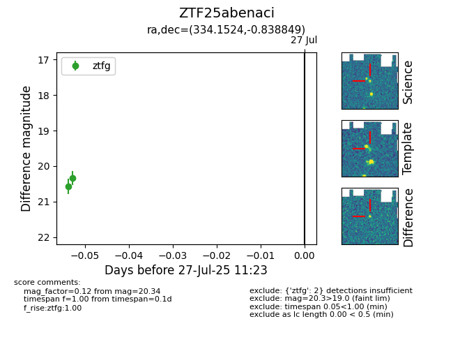

Target ZTF25abenaci at 2025-07-27 11:23, see:
FINK: fink-portal.org/ZTF25abenaci
Lasair: lasair-ztf.lsst.ac.uk/objects/ZTF25abenaci
ALeRCE: alerce.online/object/ZTF25abenaci
alt names
ZTF25abenaci (ztf,fink)
coordinates:
equatorial (ra, dec) = (334.1524,-0.83885)
galactic (l, b) = (61.6625,-44.51582)
photometry
last ztfg=20.34
2 ztfg detections
